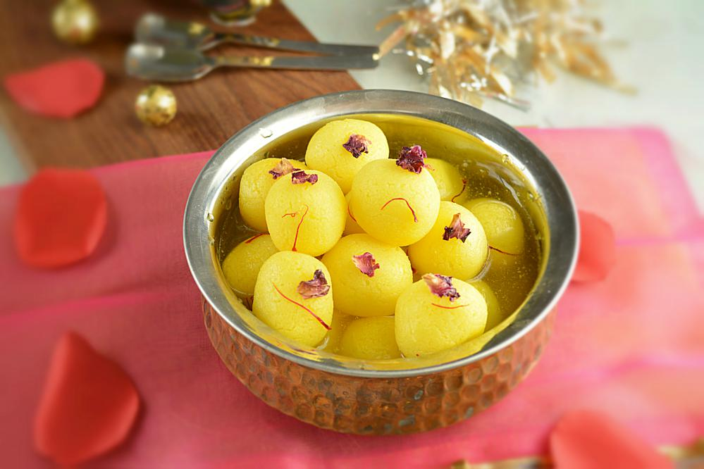
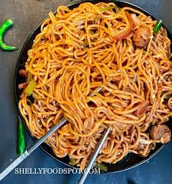

Chole Bhature also known as Chana Bhatura is one of the most popular Punjabi dish liked almost all over India.

Rasgulla
Rasgulla (literally "syrup filled ball") [a] is a syrupy dessert popular in the eastern part of South Asia. It is made from ball-shaped dumplings of chhena dough, cooked in light sugar syrup made of sugar.
Momos
Their popularity then trickled down to other parts of the country, ultimately becoming the much-loved soul food for so many of us.

Chowmein
TChow mein is a Chinese dish of fried (chow) noodles (mein).